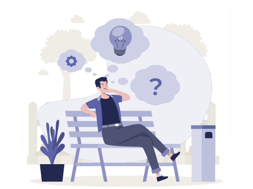

Microsoft- und KI-Kompetenz mit Verantwortung über den Go-Live hinaus.
Wir begleiten Unternehmen und Institutionen von Beratung und Architektur über Umsetzung und Einführung bis zu Betrieb und Weiterentwicklung. Unser Schwerpunkt liegt auf Microsoft-Technologien, KI, Software Engineering und Cybersecurity.
Wer wir sind
Consultim-IT ist ein Digitaldienstleister (ESN), spezialisiert auf digitale Transformation mit Microsoft-Technologien. Wir begleiten Organisationen über den gesamten Transformationszyklus, von Scoping und Architektur über Umsetzung und Einführung bis zur kontinuierlichen Weiterentwicklung.
Unsere Arbeit umfasst Enterprise-KI und Agentenentwicklung, moderne Arbeitsumgebungen, KI-gestütztes Dokumentenmanagement, Individualentwicklung und Digital Commerce, hybride Cloud-Modernisierung und Data Governance, Microsoft-Cybersecurity, Managed Services und Microsoft-Lizenzierung.
Wir sind in Telekommunikation, Finanzwesen und Versicherung, Industrie, Energie, öffentlichem Sektor, internationalen Organisationen und der Lebensmittelbranche tätig, in Tunesien, Frankreich, Deutschland, der Schweiz, Côte d'Ivoire, Kamerun und der Golfregion.
Unsere Werte
- Expertise: tiefe Spezialisierung auf Microsoft 365, SharePoint, Power Platform, Azure, KI und .NET
- Flexibilität: Zusammenarbeitsmodelle, die zu Ihrer Arbeitsweise passen
- Nähe: ein gemeinsamer Arbeitstag, gemeinsame Sprachen und erreichbare Ansprechpartner
- Innovation:: KI und Automatisierung angewandt auf reale Geschäftsprozesse
Von A bis Z und darüber hinaus. Wir begleiten Kunden von der Anforderungsanalyse über die Lösungsentwicklung und Integration bis zur evolutionären und korrektiven Wartung. Diese Kontinuität verschafft uns tiefes Systemwissen, und genau das lässt unsere Supportverträge funktionieren.
Wir nutzen KI. Wir bauen KI.
Jeder Berater nutzt KI im Arbeitsalltag: Codegenerierung und -review, Test-Scaffolding, Migrationsskripte, Datenanalyse und Dokumentation.
Konkret: Mehr Projektstunden fließen in Architektur, Geschäftslogik und Entscheidungen, die menschliches Urteilsvermögen erfordern, und weniger in Routinecode. Es bedeutet auch, dass die Agenten-, RAG- und MCP-Patterns, die wir für Kunden entwerfen, zuerst von uns selbst betrieben werden, einschließlich vollständig souveräner On-Premises-Bereitstellungen, wenn Kundendaten die eigene Infrastruktur nicht verlassen dürfen.
Sprint-Reviews mit Ihnen
Jeder Sprint endet mit einem Review, in dem wir Ergebnisse vorstellen und Feedback aufnehmen, bevor der nächste Sprint geplant wird.
Eine Retrospektive in jedem Sprint
Jeder Sprint schließt zudem mit einer Retrospektive, die Praktiken und Prozesse bewertet, damit sich die Umsetzung stetig verbessert.
Regelmäßige Abstimmung
Regelmäßige Abstimmungstermine verfolgen den Fortschritt und machen Blocker früh sichtbar, während die Teams dazwischen eigenständig arbeiten.
Wer die Arbeit liefert
Spezialisten für Architektur, Projektmanagement, Microsoft 365, Power Platform, KI-Engineering, .NET- und Frontend-Entwicklung, Cybersecurity und Change Management, ergänzt durch ein Netzwerk assoziierter Berater für größere Programme.
Unsere Mitarbeitenden verfügen über den Status Microsoft Certified Trainer, Zertifizierungen in Microsoft 365, SharePoint, Power Platform und Azure sowie PMP, SAFe Agilist, Certified ScrumMaster und Prosci-Change-Practitioner.
- Solution-Architektur: über 14 Jahre Microsoft-Plattformerfahrung auf Lead-Ebene
- Cybersecurity-Team: eigene Practice mit selbst entwickelten Assessment-Werkzeugen
- KI-Engineering: Agenten, RAG, MCP, On-Premises-Modellbetrieb
- Programm-Management: PMP-, SAFe- und Prosci-zertifizierte Praktiker
- Migrations-Engineering: Exchange, SharePoint, OneDrive in Unternehmensgröße
- Schulung & Adoption: MCT-qualifizierte Trainer auf Französisch, Englisch und Arabisch
Was Kunden uns zuerst fragen

Nein. Microsoft ist unser Kerngebiet, und wir vertreiben Microsoft-Lizenzen, aber wir sind technologieoffen und integrieren andere Technologien, wenn sie besser zum Geschäftsproblem und zur Zielarchitektur passen, einschließlich Open-Weight-KI-Modellen auf Kundeninfrastruktur.
Alle drei. Wir verbinden Microsoft-Plattformexpertise mit Software-Engineering, KI, Cybersecurity, Managed Services und Lizenzierung. So können wir die Verantwortung für ein ganzes Problem übernehmen statt nur für eine Schicht davon.
Ja. Wir ergänzen interne Teams durch Teamverstärkung, dedizierte Teams oder vollständige Projektumsetzung, je nach Bedarf.
In Tunesien, mit einem Büro in Frankreich. Tunesien liegt in der mitteleuropäischen Zeitzone, was einen vollständig geteilten Arbeitstag mit europäischen und Golf-Kunden ermöglicht.
Französisch, Englisch und Arabisch, einschließlich arabischsprachiger Trainer für die Endnutzerbefähigung.
Ja, mit direkter Erfahrung in Beschaffungsprozessen von Entwicklungsbanken, Ministerien und staatlichen Betreibern. Nutzen Sie unseren Kontakt für Ausschreibungen: Wir bestätigen den Eingang und nennen Ihnen die benötigten administrativen Unterlagen.
Ja. Wir beschreiben Referenzen öffentlich nach Branche und Größenordnung und stellen benannte Referenzen, detaillierte Dokumentation und Referenzkontakte unter NDA oder in Ausschreibungsantworten bereit, sofern der Kunde dies genehmigt hat.
Evolutionäre und korrektive Wartung im Rahmen eines Supportvertrags, mit definierten Reaktions- und Lösungszusagen, Patch-Management, Health-Checks und quartalsweisen Service-Reviews.